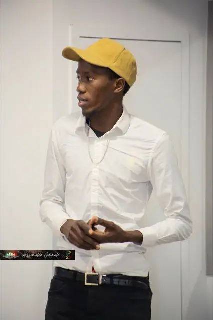
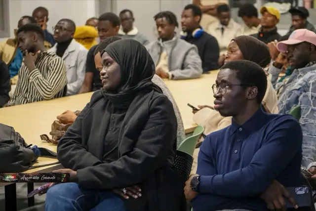
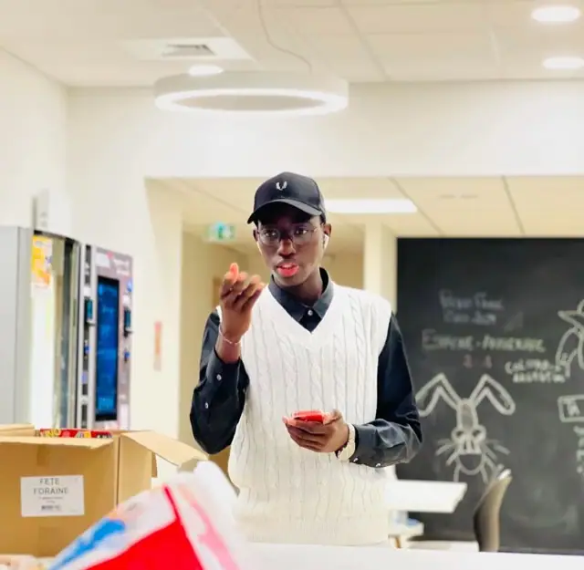
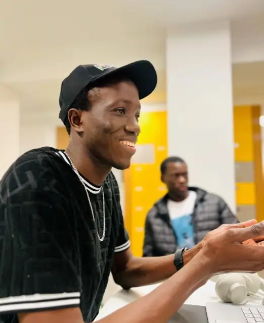
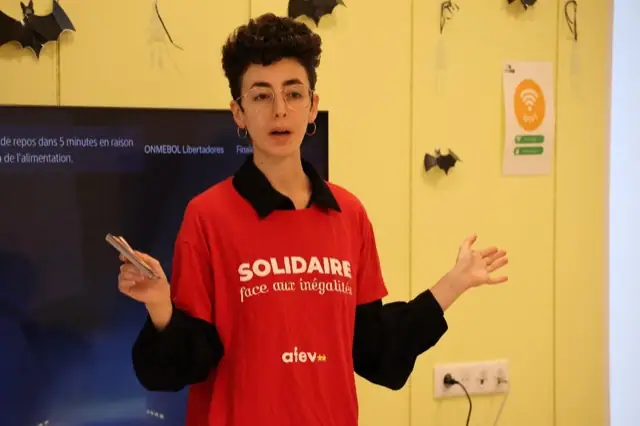
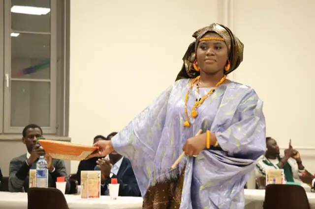

Derrière le visa : une série qui attend encore son tournage
Subvention obtenue, équipe formée, accompagnement trouvé — et un tournage reporté faute de disponibilités communes.
Lire l'articleActualités
Assemblées générales, journées d'intégration, tournois, guides pratiques pour les nouveaux arrivants : on essaie de documenter ce qu'on fait, avec ses réussites et ses ratés. Huit articles pour l'instant, d'autres suivront au fil de l'année.

Subvention obtenue, équipe formée, accompagnement trouvé — et un tournage reporté faute de disponibilités communes.
Lire l'article
Lancée fin septembre avec l'Association des Sénégalais de la Moselle, distribuée le jour de l'assemblée générale.
Lire l'article
Bilan du mandat 2024-2025, vote et élection d'Oumar Ka Thiam à la présidence.
Lire l'article
Accueil des nouveaux étudiants au CAP, animé par M. Abdoulaye Ba, expert sénégalais en gouvernance de l'IA.
Lire l'article
Logement, CAF, préfecture, banque, inscription : l'ordre dans lequel s'y prendre.
Lire l'article
Metz élimine Nancy aux tirs au but, puis s'incline en finale régionale le 14 juillet.
Lire l'article
Le 17 avril, une après-midi d'ateliers ; le 16 mai, l'anniversaire du CAP et la visite de François Grosdidier.
Lire l'article
Retour sur la journée d'intégration qui a réuni plus de 100 étudiants, entre défilé, théâtre et parrainage.
Lire l'article